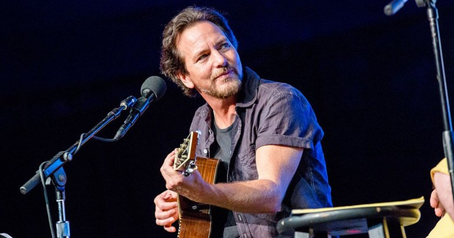
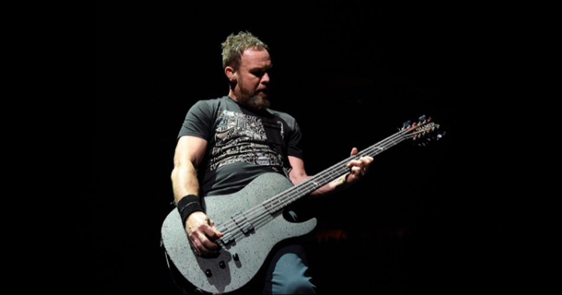
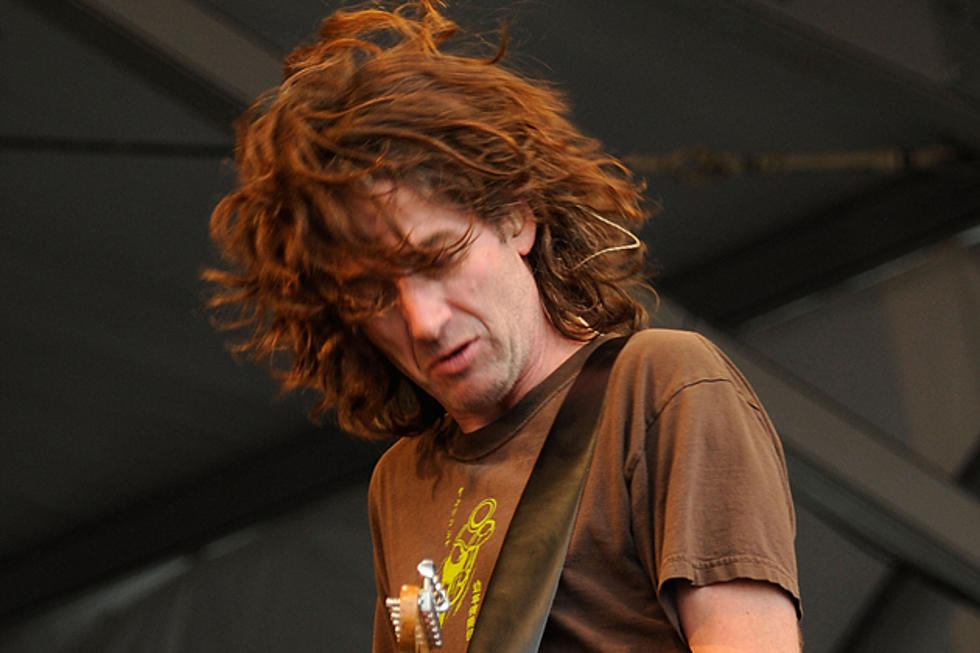
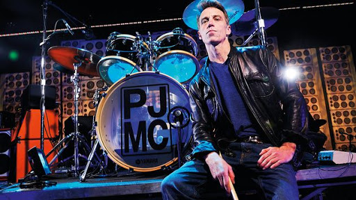
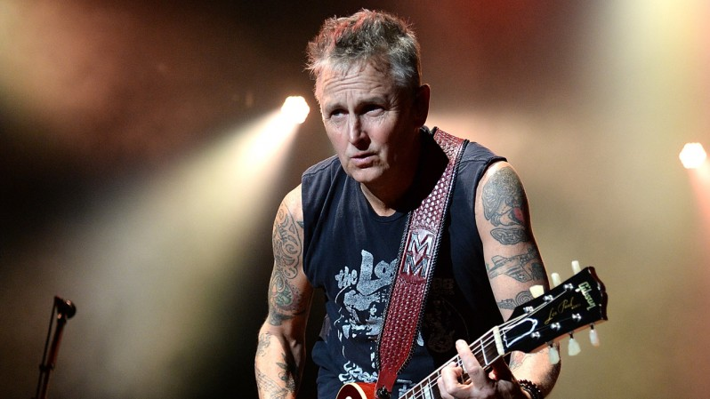

Os musicos.
Eddie Vedder

Eddie Vedder (nascido Edward Louis Severson III, em Evanston, 23 de dezembro de 1964)é um cantor, compositor e músico americano, mais conhecido por ser o vocalista e um dos guitarristas da banda de rock alternativo Pearl Jam. Ele é famoso por seu tom de voz barítono. Em 1991 fez parte do álbum Temple of the Dog da banda de mesmo nome formada por membros do Soundgarden e Pearl Jam em tributo a Andrew Wood. Vedder também criou música para álbuns de outros artistas, além de ter uma carreira a solo começando em 2007, quando lançou o seu primeiro álbum como trilha sonora do filme Into the Wild (2007). O seu segundo álbum, Ukulele Songs, e um DVD, Water on the Road, foram lançados em 2011..
Jeff Ament

Jeffrey Allen Ament (Havre, 10 de março de 1963) é um músico estadunidense,
baixista da banda Pearl Jam. Juntamente com Stone Gossard, Mike McCready,
e Eddie Vedder, ele é um dos fundadores do Pearl Jam.
Ament também é conhecido por seus trabalhos anteriores ao Pearl Jam, com as bandas grunge de
Seattle,
Green River e Mother Love Bone, e é particularmente conhecido por seu trabalho com o baixo sem
trastes, contrabaixo e baixo de 12 cordas.
Ament também é membro da banda Three Fish. Em 2008, Ament lançou seu primeiro álbum solo, Tone.
Stone Gossard

Gossard cresceu entre uma classe média-alta onde seu pai, David W. Gossard Jr.,
era advogado e sua mãe, Mary Carolyn Carpenter, estava ligada à música,
cresceu com mais três irmãs de nome Eleanor, Star e Shelly.
Estudou na Northwestern Seattle Music School of the Arts, onde refinou as suas técnicas de
Guitarra entre outros instrumentos,
mais tarde, Stone foi influenciado pelo Punk/Hard Rock da altura vindo dos Led Zeppelin, Kiss,
The Ramones, Neil Young e AC/DC.
Matt Cameron

Matthew David Cameron mais conhecido como Matthew Cameron (San Diego, 28 de
novembro de 1962),
é um musico norte-americano, mundialmente conhecido por ser o baterista do Soundgarden (1986-97
e desde 2010)e do Pearl Jam (desde 1998).
Em 1998 após a dissolução do Soundgarden, entrou para o Pearl Jam substituindo Jack Irons,
estreando no álbum Live on Two Legs.
Paralelamente ele também possui diversos projetos em outras bandas como, Wellwater Conspiracy e
Hater.
Fez parte da banda Temple of the Dog, juntamente com Chris Cornell, Stone Gossard, Jeff Ament,
Mike McCready e Eddie Vedder.A banda lançou um álbum auto-intitulado em 1991.
Mike Mccready

Mike McCready (Pensacola, 5 de abril de 1966) é um músico estadunidense, guitarrista
da banda Pearl Jam.
Stone Gossard e Jeff Ament no Projeto de Cornell o Temple of the Dog e convidando para ingressar
na banda após alguns de seus membros terem assistido uma
apresentação sua, na qual além de ter tocado muito bem, se lamentava de não ter equipamento
próprio.
Suas principais influências são Jimi Hendrix e Stevie Ray Vaughan.
Tocou nas bandas Warrior/Shadow (1978 a 1988) e Temple of The Dog (1990 a 2016). Ingressou no
Pearl Jam em 1990.